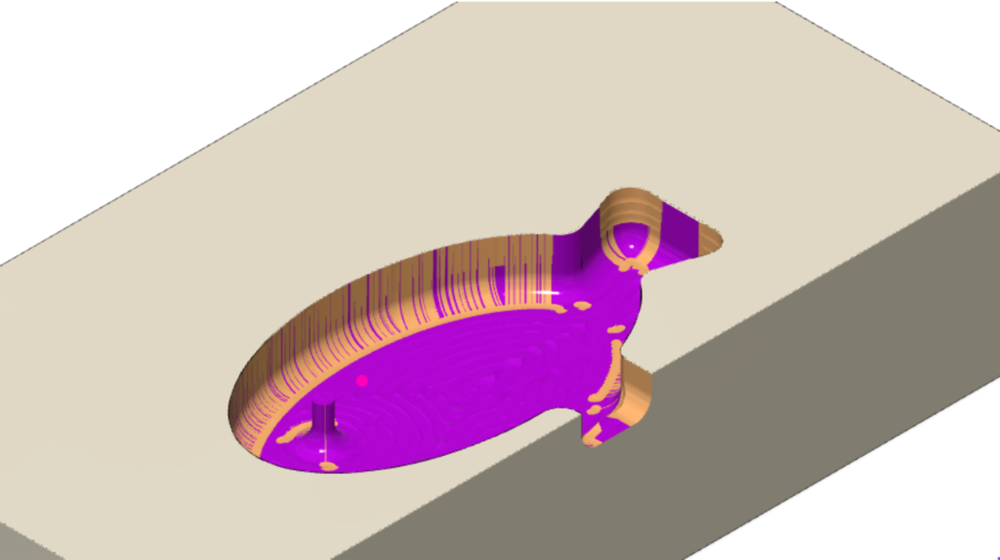
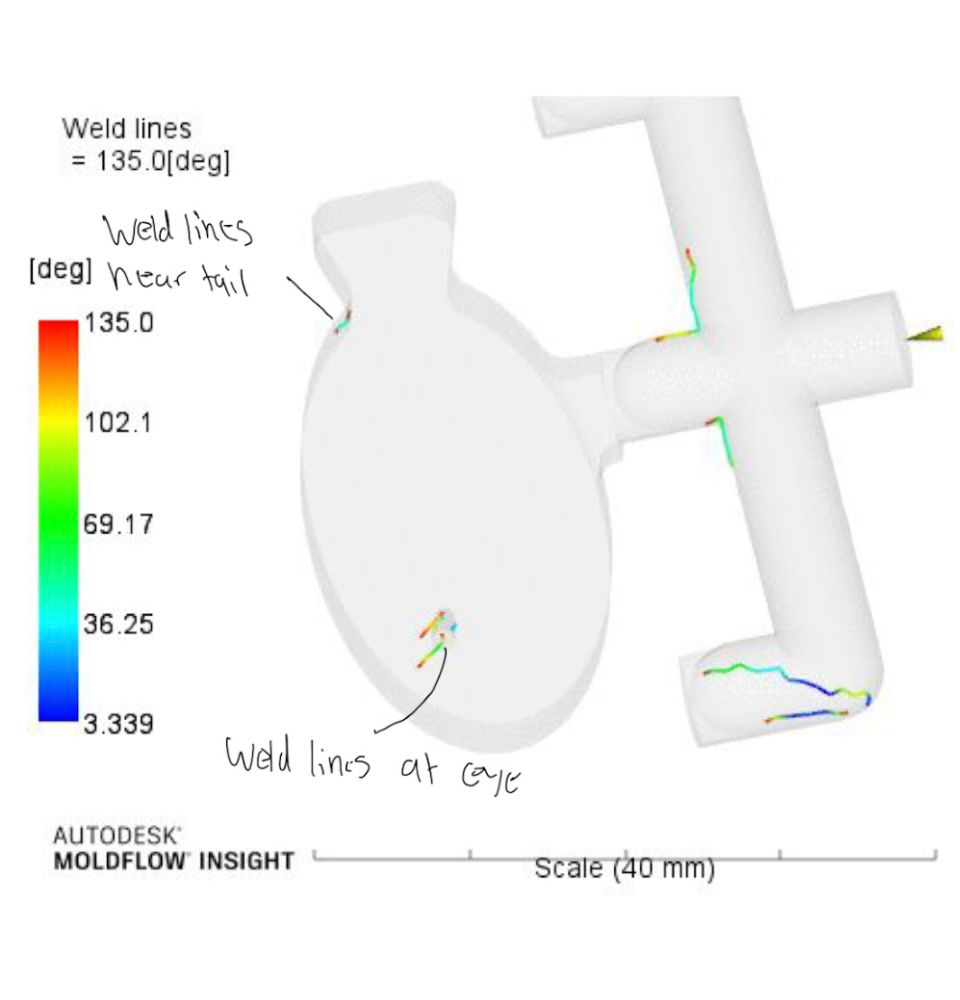
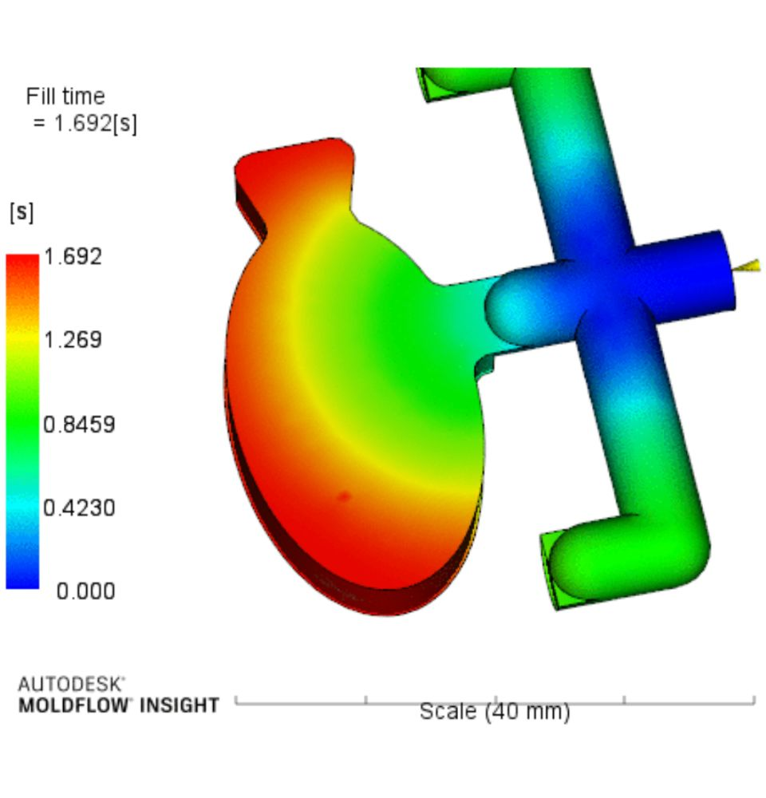
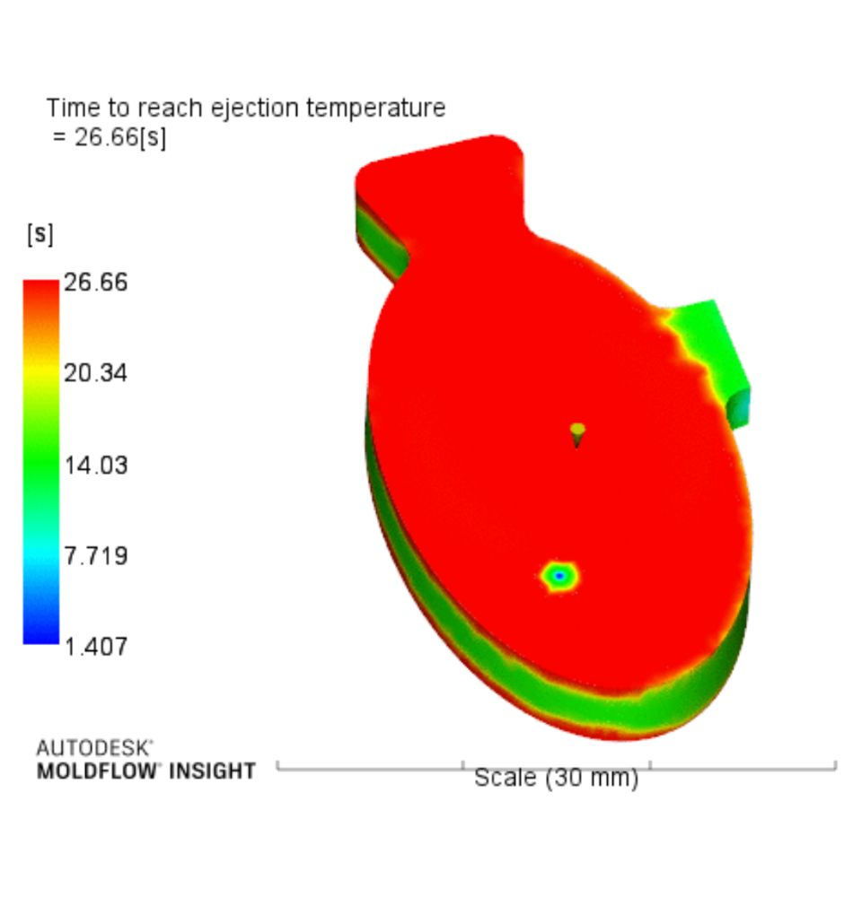
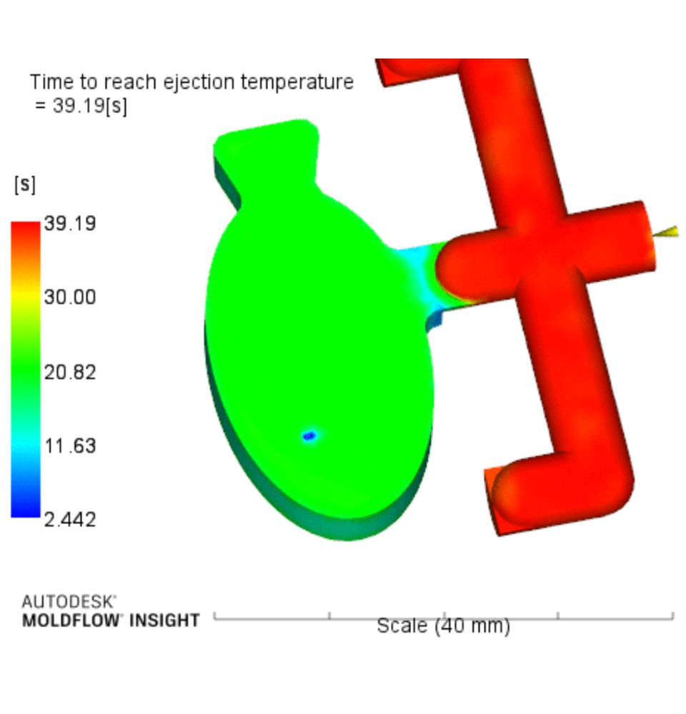
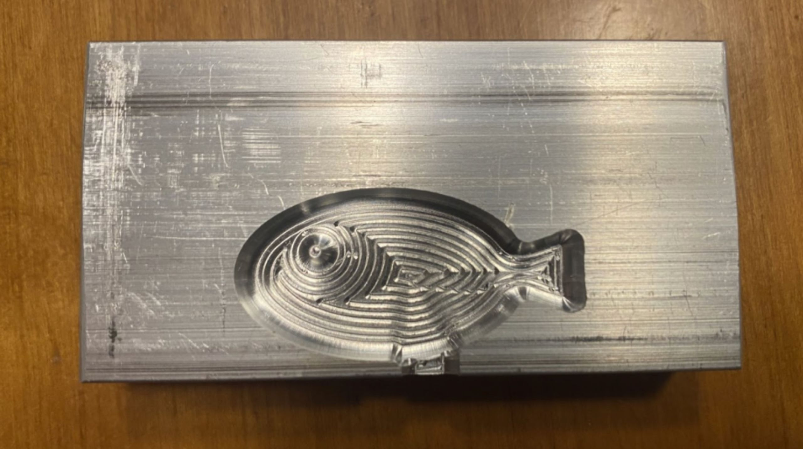

Overview
From aluminum chips to finished plastic parts
This project demonstrates a complete design-to-manufacture pipeline. We first created precision aluminum cavities with CNC machining, then used those cavities to mold polymer parts, validating digital flow simulations against real-world results. The workflow highlights how early machining decisions ripple through to molding efficiency, part quality, and cycle time.
Concept
Virtual iterate, physical verify
- Cost control — Making tooling right the first time saves thousands in rework.
- Speed — A 20-minute machining window and sub-second fill time keep throughput high.
- Data-driven — Simulation pinpoints weld lines, air traps, and hot spots before metal chips fly.

Design Process
Step-by-step refinement
- CNC strategy: optimized toolpaths (rough → finish) to hit an 18 min 38 s cycle with no chatter.
- Surface prep: added slight tapers and reduced scallop height to improve polymer release.
- Runner & gate tuning: balanced flow paths, shifted gates toward thicker masses, and shortened fill time by 60 %.
- Simulation sweep: varied pressure (40–60 psi) and melt temperature (325–375 °F); pressure proved 4× more influential on flow length.
- Press trials: molded ABS parts, measured spiral flow, and cross-checked prediction vs reality (≤20 % error in most cases).




Specifications
Critical numbers
- Material: ABS, MFI 16 g/10 min
- Melt temperature: 325 – 375 °F
- Injection pressure: 40 – 60 psi
- Target fill time: <1.0 s (achieved 0.4 s)
- Cooling to eject: reduced from 27 s→9 s with rib thinning
- Machining cycle: 18 min 38 s per cavity

Result
Quantifiable impact
- Gate relocation eliminated visible weld lines and cut scrap to <1 %.
- Tooling tweaks shaved 13 s off cooling, saving 69 operator-hours per million shots.
- Validated that pressure adjustments extend flow length ≈4 mm/psi—vital for thin-wall parts.
- A single plastic brick now cycles in ~10 s, compared with minutes on typical 3-D printers.